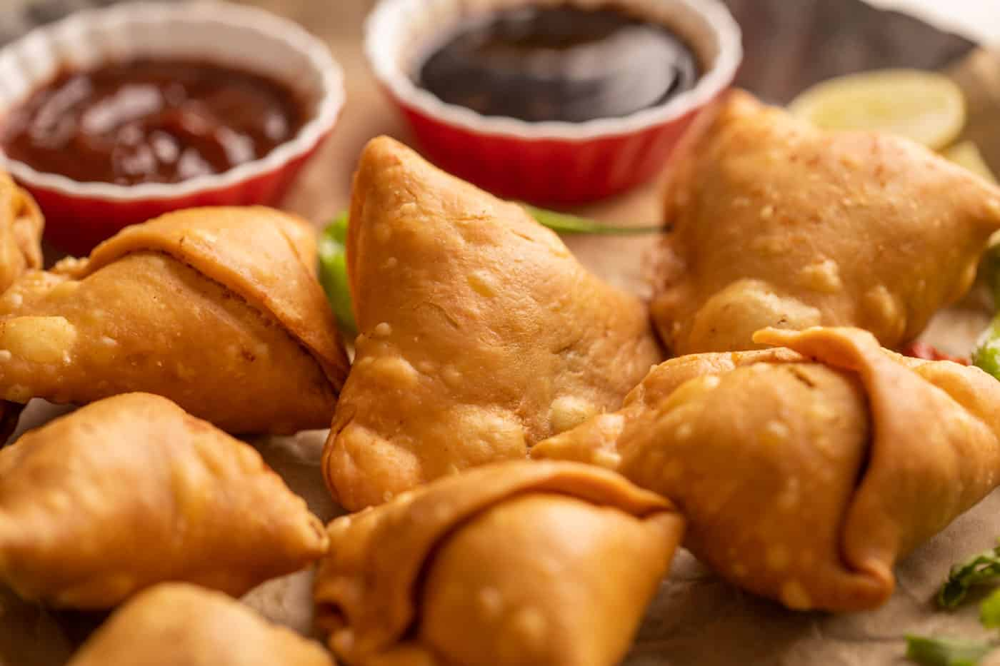

Samosa recipe

Description
A samosa is a fried or baked pastry with a savory filling, such as spiced potatoes, onions, peas, cheese, beef
and other meats, or lentils. It may take different forms, including triangular, cone, or half-moon shapes,
depending on the region. The Indian style, often accompanied by a mint chutney, is probably the most widely
known of a broad family of recipes from Africa to China, which have origins in medieval times or earlier.
Ingredients
- 4 potatoes, peeled and cubed
- ¼ cup vegetable oil
- 2 small onions, finely chopped
- 3 tablespoons coriander seed
- 1 tablespoon curry powder
- 1 (1 inch) piece fresh ginger, grated
- 1 teaspoon salt
- 1 teaspoon ground turmeric
- 1 teaspoon ground cumin
- ½ teaspoon ground allspice
- ½ teaspoon cayenne pepper
- ⅛ teaspoon ground cinnamon
- 2 Roma (plum) tomatoes, finely chopped
- ½ cup frozen peas
- 2 (14.1 ounce) packages double-crust pie crusts, thawed
Instructions
- Place the potatoes into a large pot and cover with salted water. Bring to a boil over high heat, then reduce
heat to medium-low, cover, and simmer until just tender, about 15 minutes. Drain and allow to steam dry for
a
minute or two. Transfer to a large mixing bowl and refrigerate until cold.
- Heat the vegetable oil in a large skillet over medium heat. Stir in the onions; cook and stir until the
onion
has softened and turned translucent, about 5 minutes. Add the coriander seed, curry powder, ginger, salt,
turmeric, cumin, allspice, cayenne pepper, and cinnamon. Cook and stir for 2 minutes until the spices are
fragrant. Add the tomatoes and cook until they begin to break down, about 5 minutes. Stir in the peas and
cook
for 2 minutes. Remove from heat and allow to cool to room temperature.
- Preheat an oven to 375 degrees F (190 degrees C). Line a baking sheet with parchment paper.
- Roll out one of the pie crusts on a floured work surface to about 1/8-inch thick. Cut into 6-inch rounds
using a
cookie cutter or the rim of a small bowl. Place a spoonful of the potato filling onto the center of each
round.
Moisten the edges with water, then fold in half to enclose the filling. Use a fork to press and seal the
edges.
Place onto the prepared baking sheet. Repeat with the remaining pie crusts and filling.
- Bake in the preheated oven until golden brown, 20 to 25 minutes. Serve hot or at room temperature.